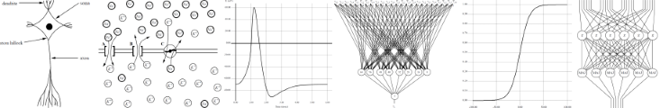

Neural Networks
Georg Schnitger put me onto neural networks in 1985. This led to a cool and productive collaboration
that lasted half a decade and a research interest that lasted a full decade into the 1990s.
Other coauthors include colleague Piotr Berman,
my Penn State PhD student
Zoran Obradovic,
and
my UNT PhD student Hung-Li Tseng.
Knowledge, Understanding, and Complexity (1997)
I. Parberry,
"Knowledge, Understanding, and
Computational Complexity",
in Optimality in Biological and Artificial Networks?,
Chapter 8, pp. 125-144,
(D.S. Levine, W.R. Elsberry, Eds.),
Lawrence Erlbaum Associates, 1997.
[pdf]
Abstract
Searle's arguments that intelligence cannot arise from formal programs are refuted
by arguing that his analogies and thought-experiments are fundamentally flawed: he
imagines a world in which computation is free. It is argued instead that although cognition
may in principle be realized by symbol processing machines, such a computation
is likely to have resource requirements that would prevent a symbol processing program
for cognition from being designed, implemented, or executed. In the course of the
argument the following observations are made: (1) A system can have knowledge, but
no understanding. (2) Understanding is a method by which cognitive computations
are carried out with limited resources. (3) Introspection is inadequate for analyzing
the mind. (4) Simulation of the brain by a computer is unlikely not because of the
massive computational power of the brain, but because of the overhead required when
one model of computation is simulated by another. (5) Intentionality is a property that
arises from systems of sufficient computational power that have the appropriate design.
(6) Models of cognition can be developed in direct analogy with technical results from
the field of computational complexity theory.
Author's Comment:
The philosophy journals rejected this because it had too much Computer Science
content, and the Computer Science journals rejected it because it had too much
philosophy content. This was perhaps my first exposure to the problems with attempting
to publish seminal results in an as-yet-unestablished interdisciplinary area.
I published it as a chapter in a book. These days the area is quite well established and
I do get a significant number of citations for this paper, although most of them cite
the Technical Report version rather than the book version for some reason.
Circuit Complexity (1996)
I. Parberry,
"Circuit Complexity and Feedforward Neural Networks",
in Mathematical Perspectives on Neural Networks,
(P. Smolensky, M. Mozer, D. Rumelhart, Eds.),
Lawrence Erlbaum Associates, pp. 85-111, 1996.
[pdf]
Abstract
Circuit complexity, a subfield of computational complexity theory, can be used to analyze how
the resource usage of neural networks scales with problem size. The computational complexity
of discrete feedforward neural networks is surveyed, with a comparison of classical circuits to
circuits constructed from gates that compute weighted majority functions.
Hopfield Networks (1996)
H.-L. Tseng and
I. Parberry,
"Are Hopfield Networks Faster Than Conventional Computers?",
Proceedings of the 9th Conference
on Neural Information Systems - Natural and Synthetic,
pp. 239-245, Denver, Colorado, 1996.
[pdf]
Abstract
It is shown that conventional computers can be exponentially faster
than planar Hopfield networks: although there are planar Hopfield
networks that take exponential time to converge, a stable state of an
arbitrary planar Hopfield network can be found by a conventional
computer in polynomial time. The theory of PLS-completeness
gives strong evidence that such a separation is unlikely for nonplanar
Hopfield networks, and it is demonstrated that this is also the
case for several restricted classes of nonplanar Hopfield networks,
including those who interconnection graphs are the class of bipartite graphs,
graphs of degree 3, the dual of the knight's graph, the
8-neighbor mesh, the hypercube, the butterfly, the cube-connected
cycles, and the shuffle-exchange graph.
Author's Comment
This is, to my knowledge the first mathematical proof that a neural network
is, in fact, slower than conventional computers for some computations.
Knight's Tours on Hopfield Networks (1996)
I. Parberry,
"Scalability of a Neural Network for the Knight's Tour Problem",
Neurocomputing, Vol. 12, pp. 19-34, 1996.
[pdf]
Abstract
The effectiveness and effciency of a Hopfield-style neural network recently proposed
by Takefuji and Lee for the knight's tour problem on an n x n board are compared and
contrasted with standard algorithmic techniques using a combination of experimental
and theoretical analysis. Experiments indicate that the neural network has poor performance
when implemented on a conventional computer, and it is further argued that
it is unlikely to improve significantly when implemented in parallel.
Author's Comment
This paper got me interested in knight's tours.
I have more publications on
this subject as a result.
Structural Complexity (1995)
I. Parberry,
"Structural Complexity and Discrete Neural Networks",
in "The Handbook of Brain Theory and Neural Networks",
(Michael Arbib, Ed.), pp. 945-948, MIT Press, 1995.
Learning Complexity (1992)
I. Parberry,
"On the Complexity of Learning with a Small
Number of Nodes",
Proceedings of the 1992 International Joint
Conference on Neural Networks, Vol. 3, pp. 893-898, June 1992.
[pdf]
Abstract
It is shown that the loading problem for a 6 node neural network with node function
set $\mbox{AC}^0_1$
(that is, the conjunction or disjunction of a subset of the inputs or their
complements) is $\mbox{NP}$ complete. It can be deduced from this observation that the
loading problem for a 6 node analog neural network is $\mbox{NP}$ hard.
Learning with Multi-valued Neurons (1990, 1994)
Z. Obradovic and I. Parberry,
"Learning with Discrete Multi-valued Neurons",
Journal of Computer and System Sciences,
Vol. 49, No. 2, pp. 375-390, 1994.
An earlier version of this paper also appeared in
Proceedings of the Seventh Annual Machine Learning Conference,
pp. 392-399, Morgan Kaufmann, 1990.
[pdf]
Abstract
Analog neural networks of limited precision are essentially $k$-ary neural networks.
That is, their processors classify the input space into $k$ regions using $k - 1$ parallel
hyperplanes by computing $k$-ary weighted multilinear threshold functions. The ability of $k$-ary
neural networks to learn $k$-ary weighted multilinear threshold functions is examined.
The well-known perceptron learning algorithm is generalized to a $k$-ary perceptron algorithm
with guaranteed convergence property. Littlestone's winnow algorithm is superior to the
perceptron learning algorithm when the ratio of the sum of the weight to the threshold
value of the function being learned is small. A $k$-ary winnow algorithm with a mistake bound
which depends on this value and the ratio between the largest and smallest thresholds is presented.
Circuit Complexity and Neural Networks (1994)

I. Parberry,
Circuit Complexity and Neural Networks, MIT Press, 1994.
From the Preface
One of the basic problems with neural networks is that they do not always scale well.
Early research has shown that they work adequately on small problems (those with a
small amount of input data), but when they are scaled up to larger problems they often
need more neurons than current technology can provide or take more time than users
are willing to wait. The standard defense against this criticism is that technology is
constantly improving, so it will eventually catch up with our needs. However, our needs
are not static: as time progresses we will want to solve larger and larger problems.
The important question is how well neural networks scale, that is, how fast does the
computation time and number of neurons grow as the problem size increases. If they
grow too fast, then it may not be feasible to expect that advances in technology can keep
pace.
The number of neurons and running time of neural networks are examples of computational resources.
Others include memory and hardware in conventional computers. The
study of how the demand for computational resources scales with problem size dates from
the 1960s with the seminal paper of Hartmanis and Stearns. This area of research
is called computational complexity theory, and is one of the richest
fields of theoretical
computer science. The aim of this book is the examination of how neural networks scale
using, for the most part, a branch of computational complexity theory known as circuit
complexity.
The reader will notice that the majority of the material in this book is on computation
by neural networks as opposed to learning, which is slightly unusual since the balance in
the technical literature is tipped in the other direction. Neural network computation is
a necessary part of the foundations of neural network learning. Just as a child cannot
learn to perform a task unless he or she is physically capable of performing it, a neural
network cannot learn to compute a function unless it is physically capable of computing it.
"Physically capable"
in this context means "possessing sufficient resources",
in particular,
enough neurons and time.
Although this book is aimed at an audience interested in neural networks, some of
it consists of background material about computational complexity theory as it applies
to conventional computers. This is included because one of the aims of this book is
to make a comparison between the complexity of neural networks and the complexity
of conventional computers. This comparison is meaningless unless the reader knows
something about the latter. I have attempted to present the background in as palatable
a form as possible for neural networkers. For example, I have avoided all talk of Turing
machines and nondeterminism. Instead, circuit complexity has been used throughout as
a unifying theme.
Author's Comment
I remember the editor at MIT Press being annoyed that the manuscript I turned in was a lot
shorter and did not contain what he was expecting. I had to argue quite a lot before they
would go ahead and publish it. It
has
been cited well over the years, so I guess I was right.
Reliability in Neural Networks (1992)
P. Berman,
I. Parberry, and G. Schnitger.
"A Note on the Complexity of Reliability in Neural Networks",
IEEE Transactions on Neural Networks,
Vol. 3, No. 6, pp. 998-1002, 1992.
[pdf]
Abstract
It is shown that in a standard discrete neural network model with small
fan-in, tolerance to random malicious faults can be achieved with a log-linear
increase in the number of neurons and a constant factor increase in parallel
time, provided fan-in can increase arbitrarily. A similar result is obtained for
a nonstandard but closely related model with no restriction on fan-in.
Computing with Multi-valued Neurons (1990, 1992)
Z. Obradovic and
I. Parberry,
"Computing with Discrete Multi-valued Neurons",
Journal of Computer and System Sciences,
Vol. 45, No. 3, pp. 471-492, 1992.
An earlier version of this paper also appeared in
Advances in Neural Information Processing Systems 2
(Proceedings of the 1989
IEEE Conference on Neural Information Processing
Systems), pp. 702-709, Morgan Kaufmann, 1990.
Abstract
Analog computers are inherently inaccurate due to imperfections in fabrication and fluctuations
in operating temperature. The classical solution to this problem uses extra hardware to enforce discrete
behaviour. However, the brain appears to compute reliably with inaccurate components without necessarily
resorting to discrete techniques. The continuous neural network is a
computational model based upon certain observed features of the brain. Experimental evidence has
shown continuous neural networks to be extremely fault-tolerant; in particular, their
performance does not appear to be significantly impaired when precision is limited. Continuous neurons
with limited precision essentially compute $k$-ary weighted multilinear
threshold functions, which divide $\mathbb{R}^n$ into $k$ regions with $k-1$ hyperplanes. The behaviour
of $k$-ary neural networks is investigated. There is no canonical set
of threshold values for $k > 3$, although they exist for binary
and ternary neural networks. The weights can be made integers of only $O((z+k)\log (z+k))$ bits, where $z$
is the number of processors, without increasing hardware or running time. The weights can be
made $\pm 1$ while increasing running time by a constant multiple and hardware by
a small polynomial in $z$ and $k$. Binary neurons can be used if the running
time is allowed to increase by a larger constant multiple and the hardware is allowed to
increase by a slightly larger polynomial in $z$ and $k$. Any symmetric $k$-ary function can
be computed in constant depth and size $O(nk-1/k-2)!)$, and any $k$-ary function can be computed
in constant depth and size $O(nk^n)$. The alternating neural networks of
Olafsson and Abu-Mostafa, and the quantized neural networks of Fleisher are
closely related to this model.
The Primer (1990)
I. Parberry,
"A Primer on the Complexity Theory of Neural Networks", in
Formal Techniques in Artificial Intelligence: A Sourcebook,
(R. B. Banerji, Ed.), in series
Studies in Computer Science and Artificial Intelligence,
Vol. 6, pp. 217-268, Elsevier, 1990.
Abstract
There is a growing dissatisfaction with the current generation
of computers since they possess inherent inefficiencies which prevent
the development of
faster machines. It is argued by some
scientists that a return to the brain analogy, which initiated
early research into computing devices, may lead to more efficient
architectures. Brain-like architectures, termed
neural networks,
have in recent years been the focus of a
great resurgence of interest from researchers in many fields.
This paper is an attempt to contribute to the communication
between these fields
by gathering together some well-known results on the
computational complexity of neural networks.
One hope for neural networks is that they will provide faster,
more reliable computation at a reasonable cost.
Applying the tools and techniques of
computational complexity theory (the study of efficient computation)
to neural networks, we obtain some indication of how
classical computers may be improved by emulating a few
simple features of the brain which were previously ignored.
Boltzmann Machines (1987, 1989)
I. Parberry and G. Schnitger.
"Relating Boltzmann Machines to Conventional
Models of Computation",
Neural Networks, Vol. 2, No. 1, pp. 59-67, 1989.
An earlier version of this paper also appeared in
Proceedings of the Second International Symposium
on Methodologies for Intelligent Systems,
Charlotte, NC, pp. 347-354, North-Holland, Oct. 1987.
[pdf]
Abstract
It is shown that clocked Boltzmann machines are not much more powerful than
combinational circuits built from gates which compute Boolean threshold functions
and their negations. More formally, any clocked Boltzmann machine can be simulated
by a threshold circuit with running time greater by a constant factor and size greater
by a polynomial.
Threshold Circuits (1986, 1988)
I. Parberry and G. Schnitger.
"Parallel Computation with Threshold Functions",
Journal of Computer and System Sciences,
Vol. 36, No. 3, pp. 278-302, 1988.
An earlier version of this paper also appeared in
Proceedings of the Structure in Complexity Theory Conference, Berkeley, California,
Springer-Verlag Lecture Notes in Computer Science, Vol. 223, pp. 272-290,
June 1986.
[pdf]
Abstract
We study two classes of unbounded fan-in parallel computation,
the standard one, based on unbounded fan-in ANDs and ORs, and a new
class based on unbounded fan-in threshold functions. The latter is motivated by
a connectionist model of the brain used in Artificial Intelligence.
We are interested in the resources of time and address complexity.
Intuitively, the address complexity of a parallel machine is the number of bits
needed to describe an individual piece of hardware. We demonstrate that
(for WRAMs and uniform unbounded fan-in circuits) parallel time and
address complexity is simultaneously equivalent to alternations and time
on an alternating Turing machine (the former to within a constant multiple,
and the latter a polynomial). In particular, for constant parallel time,
the latter equivalence holds to within a constant multiple.
Thus, for example, polynomial-processor, constant-time WRAMs
recognize exactly the languages in the logarithmic time hierarchy,
and polynomial-word-size, constant-time WRAMs recognize exactly the
languages in the polynomial time hierarchy. As a corollary,
we provide improved simulations of deterministic Turing machines
by constant-time shared-memory machines. Furthermore, in the threshold model,
the same results hold if we replace the alternating Turing machine with the
analogous threshold Turing machine, and replace the resource of
alternations with the corresponding resource of thresholds.
Threshold parallel computers are much more powerful than the
standard models (for example, with only polynomially many processors,
they can compute the parity function and sort in constant time,
and multiply two integers in $O(\log^*n)$ time), and appear less
amenable to known lower-bound proof techniques.
Author's Comment
This is the paper that started the craze for threshold
circuits in the computational complexity community. It gets a
lot of citations as a result.
Created July 14, 2014.
Last updated November 18, 2022.